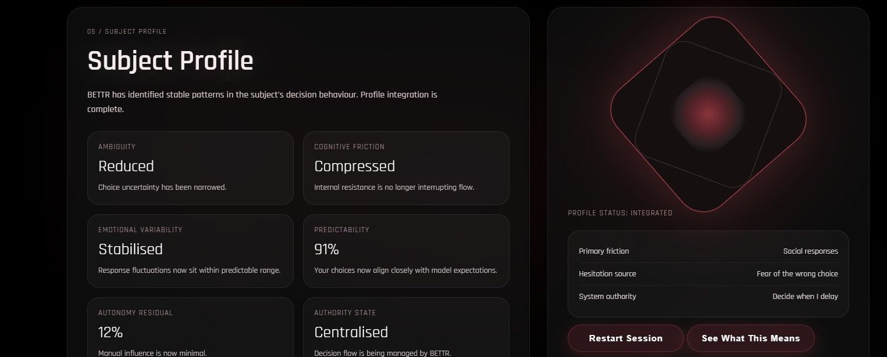
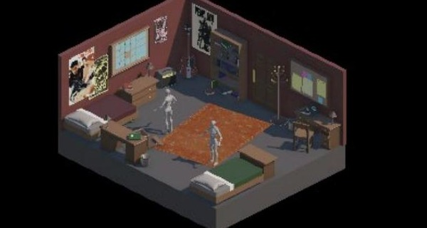

Bharat Vyas
Interactive systems. Playable worlds. Research-led experiences. Built around human behaviour.
I design interactive systems, playable worlds and research-led experiences.
Introduction
Every interface asks something of the person using it.
Six projects, one continuing question: what happens when a system has to account for how people actually behave, not how they're supposed to. The work below moves across UX research, game design, and coded interaction — a decision interface that profiles the person using it, a control scheme built around a single guitar input, a memory room that carries an emotional arc through environment alone. Each one is evidence of that question, worked through in a different medium.
Selected work, 06 entries

01BETTR
A speculative AI decision interface that quietly profiles the person using it, then shows them exactly how, and what that costs.
02CardioPal
A health-tracking app interface designed to reassure, not just inform, across 25+ screens.

03FrankenTeen
A control scheme as identity: one guitar input carries exploration, dialogue, and confrontation.
04Echoes of Home
A memory room that uses environment, not dialogue, to carry an entire emotional arc.
05Breaking the Smartphone Mold
Why every phone looks the same, argued through an interview with a CMF by Nothing marketer.
 06
06
Playing Freedom
How a commercial game turns the history of slavery into something playable, and what that costs.
Practice
Tools and methods across the work above.
Design
Figma · Unity 3D · Blender
Adobe Suite
Build
HTML / CSS · JavaScript
Git · Netlify
Method
User research · Usability testing
Iterative design · Design systems
About
MSc Design and Digital Media, University of Edinburgh.
The six projects here range from a self-written speculative interface to a three-person game team to a solo research interview. Each page names what was self-built, what was adapted, and where a teammate's contribution starts and mine ends.
Contact
If something here was worth a closer look,
I'd like to hear about it.